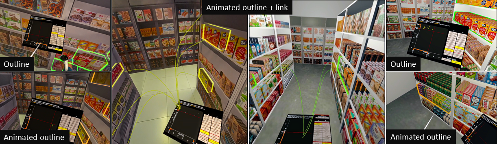

Situated Brushing and Linking in Virtual and Augmented Reality
(opens in new tab)

Venue. TVCG (2026)
Materials.
DOI(opens in new tab)
PDF(opens in new tab)
Abstract. In traditional visual analysis, brushing and linking is commonly used to visually connect multiple views using highlighting techniques. However, brushing and linking has rarely been used in situated analytics, which uses visualizations to analyze data in the context of physical referents. In situated analytics, data representations must be visually linked to real-world objects. Previous work has assessed situated brushing and linking in a virtual reality simulation of a supermarket scenario. Here, we replicate and extend the previous approach by studying brushing and linking in an actual physical space with augmented reality, while further improving the highlighting techniques. Using a video see-through display, we compare augmented reality with virtual reality. Results suggest that AR performs better in time and accuracy, but the effectiveness of the techniques varies by condition. These results provide a new framing of how the real-world stimuli matter in situated analytics.
Link to this page: